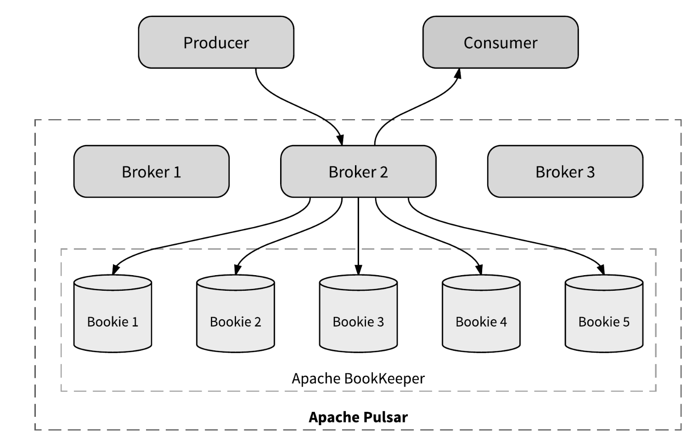
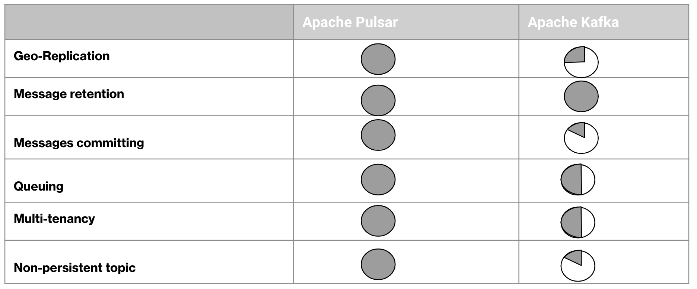

Messaging and Streaming Platform
Publish/Subscribe messaging is a type of asynchronous communication between services, commonly used in serverless and microservices architectures. In this model, messages sent to a topic are instantly delivered to all its subscribers. Pub/Sub messaging facilitates event-driven architectures and helps decouple applications, enhancing performance, reliability, and scalability.
Stream processing involves the continuous and concurrent handling of data in real time. As businesses increasingly rely on timely insights, the need for efficient stream processing continues to grow. Beyond handling large data volumes, the key challenge is processing data swiftly to enable organizations to respond to dynamic business conditions instantly.
Pulsar and Kafka are both excellent alternatives to traditional message brokers, which are used to decouple processing from data producers, buffer unprocessed messages, and more. Compared to most messaging systems, Pulsar and Kafka offer higher throughput, built-in partitioning, replication, and fault tolerance, making them well-suited for large-scale message processing applications.
However, they differ in message modeling and capabilities, which are crucial factors when selecting the right messaging system for a specific use case.
Horizontally Scalable
Apache Pulsar achieves horizontal scalability through Apache BookKeeper’s segment-oriented architecture, which allows seamless distribution of topic data across multiple bookies (BookKeeper storage nodes). This makes Pulsar fundamentally different from Apache Kafka in terms of scalability.
Why Pulsar is Horizontally Scalable
Segmented Storage Model:
- Unlike Kafka, where a topic’s partitions are tied to a specific broker, Pulsar splits topic data into segments.
- These segments are distributed across multiple bookies, enabling independent scaling of storage and processing.
Decoupling of Brokers & Storage:
- Kafka brokers are responsible for both message routing and storage, which creates a bottleneck.
- In Pulsar, brokers act as stateless routers, handling only message distribution while BookKeeper manages storage.
Dynamic Load Distribution.
Dynamic Load Distribution:
- New bookies can be added at any time, and Pulsar automatically redistributes topic segments across them.
- Since a topic’s data is not confined to a single broker, adding more bookies increases throughput and storage.
Parallel Reads & Writes:
- Pulsar enables parallel message ingestion and consumption, as multiple bookies handle different segments of a topic.
- Kafka, on the other hand, restricts a partition to a single broker, limiting its ability to scale horizontally.
Fault Tolerance & Replication:
- Pulsar’s segment-based replication ensures redundancy across bookies.
- If a bookie fails, Pulsar dynamically redistributes segments, maintaining availability and durability.

Why Kafka Cannot Scale Horizontally
Topic-Broker Binding:
- In Kafka, a topic’s partitions are tightly bound to a single broker, meaning data cannot be distributed dynamically across multiple brokers.
Broker Bottleneck:
- Each partition is owned by one broker, and adding more brokers does not increase a partition’s throughput. The only way to scale in Kafka is by adding more partitions, which introduces operational complexity and rebalancing overhead.
Limited Storage Scalability:
- Since Kafka brokers store topic data, storage capacity is limited by the individual broker’s disk space, whereas Pulsar offloads storage to BookKeeper, allowing independent scaling of storage and compute.
Conclusion
Apache Pulsar’s decoupled architecture allows true horizontal scaling, where adding more bookies increases both storage and throughput. In contrast, Kafka’s architecture is inherently limited because topics are tightly coupled to brokers, preventing seamless distribution of data across multiple brokers. 🚀
Geo-Replication
Geo-replication is a common mechanism used for
disaster recovery and message distribution. It involves replicating persistently stored messages across multiple clusters, often distributed across different data centers globally or within a country.
Apache Kafka offers MirrorMaker, a standalone tool that must be installed and managed by the Kafka cluster operator to enable geo-replication for topics.
In contrast, Pulsar provides built-in support for geo-replication, allowing messages to be reliably but asynchronously replicated across clusters without requiring additional tools.
Streaming and Queuing
Apache Pulsar achieves horizontal scalability through Apache BookKeeper’s segment-oriented architecture, which allows seamless distribution of topic data across multiple bookies (BookKeeper storage nodes). This makes Pulsar fundamentally different from Apache Kafka in terms of scalability.
a. Stream:
One of the main distinctions between Pulsar and Kafka lies in how messages are consumed and acknowledged (committed) after processing. In modern messaging systems, message consumption is typically categorized into two types: Streaming and Queueing.
- Streaming is used for scenarios where it is crucial that messages are consumed in the same order in which they were written. Both Kafka and Pulsar support streaming and ensure message ordering in their respective messaging models.
- In an event-driven architecture, a common use case for streaming is in data pipelines with multiple stages. Raw input data is consumed from a topic, aggregated, enriched or transformed, and then written to new topics for further processing.
- Kafka offers a robust stream processing library called Kafka Streams, which supports data processing. Kafka Streams serves as an alternative to other open-source stream processing tools like Apache Storm and Apache Samza.
- Pulsar, on the other hand, provides adapters for Storm and Spark, enabling messages from Pulsar topics to be injected into these processing pipelines, with the output then written to other Pulsar topics for further follow-up processing.
b. Queue:
Queuing refers to message processing that does not require any specific order and can be processed in parallel across multiple processes or application nodes. Message queuing allows multiple consumers to receive messages from a single messaging channel, where each consumer can acknowledge or commit messages individually. Stateless applications often don't require strict ordering but need the ability to acknowledge or remove messages independently while enabling parallel consumption.
Kafka does not natively support message queuing or message distribution across multiple consumers. Kafka only supports exclusive consumers, meaning that each partition can only be processed by one consumer within a consumer group. Parallelism can only be scaled by partitioning or repartitioning the topic.
In contrast, Pulsar supports message queues through shared consumers, allowing message processing throughput to be increased by scaling the number of consumers without needing to repartition the topic. Pulsar also supports partitioning independently of the number of consumers and allows consumers to commit or acknowledge individual messages after processing.
This difference in design makes Pulsar more flexible for parallel message consumption, while Kafka’s partitioning model is more rigid.
- Streaming is used for scenarios where it is crucial that messages are consumed in the same order in which they were written. Both Kafka and Pulsar support streaming and ensure message ordering in their respective messaging models.
- In an event-driven architecture, a common use case for streaming is in data pipelines with multiple stages. Raw input data is consumed from a topic, aggregated, enriched or transformed, and then written to new topics for further processing.
- Kafka offers a robust stream processing library called Kafka Streams, which supports data processing. Kafka Streams serves as an alternative to other open-source stream processing tools like Apache Storm and Apache Samza.
- Pulsar, on the other hand, provides adapters for Storm and Spark, enabling messages from Pulsar topics to be injected into these processing pipelines, with the output then written to other Pulsar topics for further follow-up processing.
Storage and retention
To ensure guaranteed message delivery, a messaging system must persist and retain messages until they have been processed and acknowledged by all consumer groups or subscribers. Both Pulsar and Kafka adopt different approaches to managing message retention.
Kafka uses time-based retention, meaning messages are deleted after a configured period, regardless of whether they’ve been consumed or acknowledged by the consumer.
In contrast, Pulsar retains messages until they are consumed and acknowledged by all consumer groups or subscribers. This behavior can be modified by setting an explicit message expiry time for a topic, causing messages to be deleted after that period, even without acknowledgement. Additionally, Pulsar allows messages to be retained beyond acknowledgement by configuring a specific retention period for the topic.
Committing messages
Some applications consume messages but require a relatively longer time to process them—ranging from seconds to minutes. Additionally, the processing is distributed across multiple nodes within the application cluster. A key requirement for such applications is the ability to commit individual messages to ensure that already processed messages are not redelivered while unprocessed messages remain available until they are explicitly committed.
Kafka does not fit well in this use case due to its limitation with high-watermark commits. In Kafka, a consumer can only inform the broker, "I’ve processed up to this point," rather than "I’ve processed this specific message." To work around this, consumer applications must implement additional logic to track the state of committed messages and update the watermark accordingly, adding complexity.
In contrast, Pulsar natively supports individual message acknowledgment and ensures that the broker retains unacknowledged messages until they are explicitly acknowledged or committed. Additionally, consumers can configure an acknowledgment timeout, allowing the broker to automatically redeliver unacknowledged messages if they are not acknowledged within the specified timeframe.

Pulsar Vs Kafka Feature Parity
Apache Pulsar is the default choice for any of your usecase.
Learn more